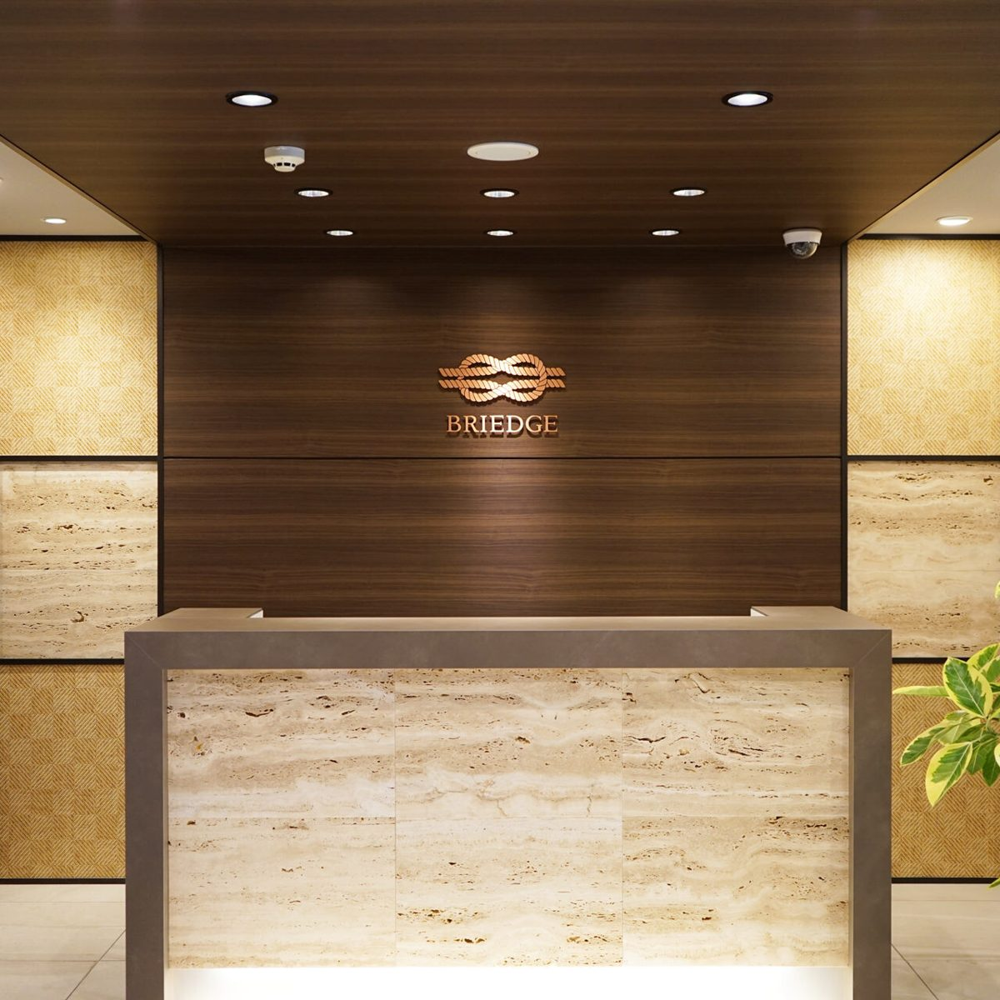

社外取締役になるには｜求められる経歴、報酬746万円の実態、探し方
社外取締役という選択肢が頭をよぎった部長・執行役員の方へ。報酬は1社あたり中央値600万円で、本業の上に乗せる「2本目の柱」です。この記事では、求められる経歴4つ、独立性と兼任の要件、就任ルート3つを、調査と条文だけで整理します。

- 社外取締役の需要は拡大中：プライムの30.3%が独立社外取締役過半（2026年）
- 社外取締役の報酬は平均746万円・中央値600万円（労政研2024年）
- 誰がなっているか：女性社外役員は27.4%、年齢は60〜64歳が最多（日本総研2025年度）
- 求められる経歴は4つ：経営経験・財務会計・法務ガバナンス・業界専門性
- 独立性の要件：会社法2条15号と東証の独立役員基準
- 兼任の上限：コードは「合理的な範囲」、機関投資家は社数で線を引く
- 探し方：サーチ会社・紹介・人材バンクの3ルート
- 40〜50代の部長が今から準備すること
- FAQ：社外取締役についてよく聞かれること
- まとめ：社外取締役は「役員になった人」の次の選択肢
社外取締役の報酬は平均746万円、中央値600万円です（労務行政研究所「役員の報酬等に関する実態調査」2024年、398人）。年収800〜1,500万円の部長が「社外取締役になって食べていく」のは、1社では成り立ちません。編集部の結論は、社外取締役は本業（現職の役員・部長、顧問、独立後の事業）の上に乗せる「2本目の柱」として狙うものであり、1本目の柱を太くしないと声はかからない、です。
この記事では、社外取締役に求められる経歴を4つに分け、誰がどのルートで就任しているか、報酬の実態、独立性と兼任の要件、そして探し方（サーチ会社・紹介・人材バンク）を、公開されている調査と法令の条文だけで整理します。40〜50代の部長・執行役員が「いつ、何を準備すれば候補に入るか」を最後にまとめました。
社外取締役の需要は拡大中：プライムの30.3%が独立社外取締役過半（2026年）
需要から先に押さえます。第一ライフ資産運用経済研究所のレポート（2026年8月）によると、プライム市場で独立社外取締役が取締役会の過半数を占める会社は30.3%に達しました。2014年の東証一部では1.4%でしたから、12年で20倍以上です。継続上場1,531社のうち過半会社は465社。この1年で新たに96社が過半化し、うち41社は取締役の総数を減らして達成しています。
背景にあるのがコーポレートガバナンス・コードの原則4-10です。プライム市場の上場会社は独立社外取締役を3分の1以上選任し、必要に応じて過半数の選任を検討する、と定めています（2021年改訂、2026年改訂でも継続）。会社法327条の2も、監査役会設置会社のうち公開会社・大会社で有価証券報告書を提出する会社に社外取締役の設置を義務づけています。
一方で、プライム上場会社数は2025年8月の1,618社から2026年8月の1,551社へ減りました。会社の数は減り、1社あたりの社外取締役は増える。椅子の総数は増えているが、取り合いになる椅子の数は限られる、というのが今の市場です。労政研2024年調査では、社外取締役を置く企業は回答127社の99.2%でした。
社外取締役の報酬は平均746万円・中央値600万円（労政研2024年）
| 区分 | 人数 | 平均（万円） | 中央値（万円） |
|---|---|---|---|
| 社外取締役 | 398人 | 746 | 600 |
| 社外監査役 | 172人 | 672 | 546 |
| （参考）常勤の取締役・兼務除く | — | 2,054 | 1,800 |
| （参考）常勤監査役 | — | 1,455 | 1,340 |
出典：労務行政研究所「役員の報酬等に関する実態調査」（2024年、年間報酬）
中央値600万円という数字をどう読むか。月に1〜2回の取締役会に出席し、事前に資料を読み込み、年に数回の委員会（指名・報酬）や工場見学に参加する、という稼働に対する報酬です。時間あたりで見れば悪くありませんが、年収として見れば部長の半分です。平均が中央値より146万円高いのは、大企業の一部で1,000万円を超える報酬を出しているためです。
社外取締役を2社兼任すれば1,200〜1,500万円、3社なら1,800〜2,200万円。これが「社外取締役で食べていく」人の計算です。ただし後述のとおり兼任数には実質的な上限があり、時間も報酬に比例して取られます。私たちが見てきた範囲では、社外取締役を3社以上抱える人は、現役の経営者や退任した役員、士業の専門家に限られます。
報酬の決め方は常勤役員と同じで、会社法361条により定款または株主総会決議で定めた枠の中で決まります。社外取締役は業績連動報酬を受け取らない設計が一般的で、固定報酬のみです。これは監督する立場の人が業績に利害を持つと独立性が疑われるためです。
18問・約5分。事業・経営・組織・変革・専門の5軸で役員候補度をスコア化し、役員の目標プロファイルとの差と、次に埋める経験まで表示します。
無料で役員候補度を診断する （約5分） ›誰がなっているか：女性社外役員は27.4%、年齢は60〜64歳が最多（日本総研2025年度）
日本総研「取締役会のジェンダーバランス調査（2025年度版）」は、プライム・スタンダード3,182社の役員延べ32,610人を集計しています。女性役員は4,859人（14.9%）で、その内訳は社内役員644人（社内役員の3.7%）、社外役員4,215人（社外役員の27.4%）。女性役員の8割以上が社外役員として就任しており、社外取締役という枠が女性役員比率の引き上げに使われている構造がはっきり出ています。
年齢は、男性役員・女性役員とも60〜64歳が最多です（男性7,502人、女性1,194人）。つまり社外取締役の典型は、60代前半で、現役の役員を退いたか退任が近い人です。40〜44歳の役員では女性比率が30.0%と高く、若い層では女性の社外役員登用が進んでいます。
この構造は、40〜50代の部長にとって2つの意味を持ちます。一つは、社外取締役の主流は「役員を経験した人」であり、部長のまま社外取締役に就任するルートは細いこと。もう一つは、女性役員比率の引き上げ要請（2030年までの目標を掲げる会社が多い）により、経営経験のある女性に対しては40〜50代でも声がかかっていることです。男女で求められる経歴の基準は同じで、違うのは需要と供給のバランスだけです。
プライムの男性役員は2021→2025年度で22,280人から14,649人へ約35%減り、女性は2,175人から3,394人へ約55%増えました。取締役の総数を減らしながら社外比率を上げる動きが、数字に表れています。役員の人数と構成の詳しい数字は役員の人数・構成（女性比率・社外取締役比率）にまとめています。
求められる経歴は4つ：経営経験・財務会計・法務ガバナンス・業界専門性
上場会社は有価証券報告書やコーポレートガバナンス報告書で、取締役ごとの「スキル・マトリックス」を開示しています。社外取締役に期待する専門性を項目で並べたもので、項目はおおむね次の4つに集約されます。
1. 経営経験（他社の社長・役員経験）
最も需要が大きい枠です。他社でPL責任を負い、取締役会で決める側にいた経験がある人。事業会社の役員OB、現役の社長・役員がここに入ります。社外取締役に求められるのは、経営陣の説明を「経営者の目で」検証することなので、自分が経営者だった人が最も説得力を持ちます。
2. 財務・会計（CFO経験、公認会計士）
監査等委員会設置会社や監査委員会では、財務の専門家を最低1人置くのが通例です。CFO経験者、公認会計士、金融機関の役員経験者が対象です。「数字を読んで異常に気づける」ことが期待されます。
3. 法務・ガバナンス・リスク管理（弁護士、法務責任者）
弁護士が中心ですが、事業会社の法務部門責任者、コンプライアンス責任者の経験も評価されます。不祥事対応や内部統制の経験があると、第三者委員会などで需要が高まります。
4. 業界・機能の専門性（IT、海外、人事、マーケティング）
会社がこれから強化したい領域の専門家です。DXを進めたい会社はIT・デジタルの責任者経験者を、海外展開を進めたい会社は海外事業の責任者経験者を、人的資本経営を打ち出す会社はCHRO経験者を求めます。ここが40〜50代の部長・執行役員にとって最も入りやすい枠です。「その領域で、会社の意思決定を変えた実績」が問われます。
この4枠に共通するのは、「何かを率いた経験」が前提になることです。部長として部門を回した経験は必要条件であり、十分条件ではありません。私たちが見てきた範囲では、社外取締役に声がかかる部長・執行役員は、自社の経営会議で論点を持ち込み、決定を動かした経験を具体的に語れる人です。「経営への近さ」の軸が高い人、と言い換えられます。
独立性の要件：会社法2条15号と東証の独立役員基準
社外取締役になるには、法律上の「社外性」と、東証の「独立性」の2つをクリアする必要があります。混同されやすいので分けて書きます。
会社法2条15号（社外取締役の要件）
- その会社または子会社の業務執行取締役・執行役・支配人その他の使用人でなく、就任前10年間もそうでなかったこと
- 就任前10年内に取締役・会計参与・監査役だった場合は、その就任前10年間に業務執行取締役等でなかったこと
- 親会社等の取締役・執行役・支配人その他の使用人でないこと
- 親会社等の子会社等（いわゆる兄弟会社）の業務執行取締役等でないこと
- その会社の取締役・執行役・支配人その他の重要な使用人、または親会社等（自然人）の配偶者・二親等内の親族でないこと
ポイントは「10年」です。自社を退職して10年経てば、元部長でも法律上は社外取締役になれます。ただし、それは「社外」であって「独立」ではありません。
東証の独立役員の独立性基準
東証は上場会社に独立役員（一般株主と利益相反が生じるおそれのない社外取締役・社外監査役）を1名以上確保するよう求め、独立性基準を「上場管理等に関するガイドライン」で定めています。親会社・兄弟会社の業務執行者、主要な取引先の業務執行者、その会社から役員報酬以外に多額の金銭を得ているコンサルタント・会計専門家・法律専門家、これらの近親者などは独立役員になれません。最近までそうだった人も同様です。主要株主（またはその業務執行者）だった人は、独立役員にすること自体は禁止されていませんが、その理由を開示する対象になります。
ガバナンス・コードの原則4-10で求められている「3分の1以上」「過半数」は、この独立社外取締役の数です。会社側が本当に欲しいのは「社外」ではなく「独立社外」なので、取引先の役員や顧問弁護士は候補から外れます。自分が独立性基準に引っかからないか、声がかかる前に確認しておいてください。
兼任の上限：コードは「合理的な範囲」、機関投資家は社数で線を引く
ガバナンス・コードの補充原則4-11②は、取締役・監査役は役割・責務を果たすために必要な時間・労力を振り向けるべきとし、他の上場会社の役員を兼任する場合は「合理的な範囲にとどめるべき」としています。条文上の社数の上限はありません。
ただし実務では、機関投資家や議決権行使助言会社が議決権行使基準で兼任数の目安を設け、超える候補者の選任議案に反対します。具体的な社数は各社の基準で異なるので、ここには書きません。確認するなら、主要な機関投資家が公表している議決権行使基準を直接読んでください。
読者にとっての実務的な意味は、「本業を持ちながら社外取締役を1〜2社」が現実的な上限だということです。現職の役員・部長が社外取締役を受ける場合、自社の兼業規程で承認が要るのが普通です。会社法356条の競業避止との関係もあり、同業他社の社外取締役は自社の取締役会承認なしには受けられません。詳しくは役員の競業避止義務と転職で解説しています。
探し方：サーチ会社・紹介・人材バンクの3ルート
社外取締役の求人は、ほぼ公開されません。編集部の整理では、就任ルートは3つです。
1. エグゼクティブサーチ会社（社外取締役サーチ）
上場会社が指名委員会で候補者を探すとき、サーチ会社に依頼する動きが増えています。リクルートエグゼクティブエージェントは「社外取締役サーチ」をサービスとして掲げ、プロフェッショナルバンクは女性社外取締役・監査役の紹介を扱っています。サーチ会社に自分の経歴を登録し、「社外取締役の打診があれば受ける」と伝えておくのが、最も再現性のある入口です。サーチ会社の一覧はエグゼクティブサーチ会社一覧を参照してください。
2. 紹介（現役・元役員のネットワーク）
今も最も多いルートです。取引先の社長、元上司の役員、監査法人・法律事務所からの紹介。ここで声がかかる人は、すでに「経営者として」認知されている人です。部長の段階で紹介を待つのは現実的ではなく、自分が役員になってから効いてくるルートです。
3. 人材バンク・公的データベース
経済団体や公的機関が、社外役員候補者のデータベースを運営している例があります。女性役員候補者の育成・登録を目的としたものが多く、研修を受けて登録する形です。登録者数や就任実績は機関ごとに異なるので、公式サイトで確認してください。
3ルートに共通するのは、「待っていて来るものではない」ということです。社外取締役を狙うなら、自分の経歴を「どの枠（経営・財務・法務・専門）で、どの業界の会社に貢献できるか」の形で言語化し、サーチ会社に登録し、研修を受けておく。この準備を50代前半までに済ませた人が、60代で複数社の社外取締役に就いています。
候補者として登録・相談できる具体的なサービス（EXE、パソナJOB HUB、プロフェッショナルバンク、リクルートエグゼクティブエージェントなど）は、社外取締役・社外役員のマッチングサービス比較で、形態・登録条件・費用・公開数字を同じ列で比べています。
40〜50代の部長が今から準備すること
社外取締役の典型は60代前半の役員経験者です。40〜50代の部長が今すぐ社外取締役になる確率は高くありませんが、10年後に候補に入るための準備は今しかできません。編集部が勧める順番は次のとおりです。
- まず自社で役員（執行役員・取締役）になる。社外取締役の4枠のうち「経営経験」は役員経験がないと埋まらない。役員になるには（部長から役員へ上がる人の共通点）を参照。
- 専門枠を一つ決める。財務・法務・IT・海外・人事のどれで「会社の意思決定を変えた実績」を語れるか。スキル・マトリックスの項目に当てはめて考える。
- 社外の肩書きを作る。業界団体の委員、大学の非常勤講師、スタートアップのアドバイザーなど、社外で評価される実績を積む。
- サーチ会社に登録する。社外取締役の打診を受ける意思を伝えておく。
- 研修を受ける。社外取締役向けの研修プログラムを受け、会社法・ガバナンス・財務の基礎を体系的に押さえる。
FAQ：社外取締役についてよく聞かれること
部長のまま社外取締役になれますか
法律上は可能です。会社法2条15号の要件は「その会社」との関係を定めたもので、他社の部長であることは妨げになりません。ただし、現職の会社の兼業規程と、受け入れ側が「部長」の経歴で十分と判断するかが問題です。専門枠（IT・海外・人事）で突出した実績があれば候補になります。
社外取締役の責任はどれくらい重いですか
社外取締役も取締役なので、任務懈怠による会社への損害賠償責任（会社法423条）と第三者に対する責任（429条）を負います。ただし、定款の定めにより責任限定契約を結べる（427条）のが通例で、報酬の一定倍を上限にする会社が多いです。就任前に責任限定契約と役員賠償責任保険（D&O保険）の有無を確認してください。
任期はどれくらいですか
取締役の任期は原則2年（会社法332条）ですが、上場会社の多くは定款で1年にしています。社外取締役も同じです。株主総会でいつでも解任されうる（339条）点も常勤役員と同じです。
社外監査役との違いは何ですか
社外監査役は取締役会で議決権を持たず、監査が役割です。報酬は平均672万円・中央値546万円（労政研2024年）で、社外取締役よりやや低い水準です。財務・法務の専門家は社外監査役から入り、社外取締役へ移るケースもあります。
まとめ：社外取締役は「役員になった人」の次の選択肢
社外取締役の報酬は平均746万円・中央値600万円（労政研2024年）。需要はプライムの30.3%が独立社外取締役過半（2026年）という水準まで拡大し、求められる経歴は経営経験・財務会計・法務ガバナンス・業界専門性の4枠に整理できます。典型は60〜64歳の役員経験者で、女性社外役員は27.4%（日本総研2025年度）です。
診断で「経営への近さ」「専門・市場価値」の軸が高ければ、専門枠での社外取締役は射程に入っています。運営会社のブライエッジは、役員・経営幹部クラスの転職支援に特化し、ベンチャー・成長企業の経営幹部ポジションに強みがあります。社外取締役の前にまず役員として経営に入る道を探すなら、無料のキャリア相談で候補ポジションの実例を聞いてください。
18問・約5分。事業・経営・組織・変革・専門の5軸で役員候補度をスコア化し、役員の目標プロファイルとの差と、次に埋める経験まで表示します。
無料で役員候補度を診断する （約5分） ›運営会社ブライエッジは、役員・経営幹部クラスのエグゼクティブサーチ・人材紹介を手がけています。今すぐ転職するつもりがなくても、現在地と次の一手の相談だけで構いません。
無料でキャリア相談を申し込む ›関連記事